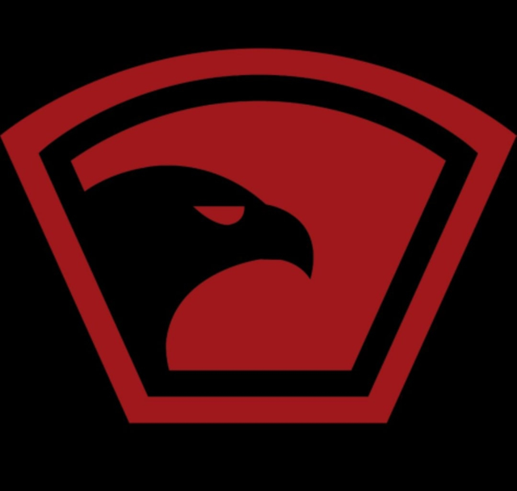
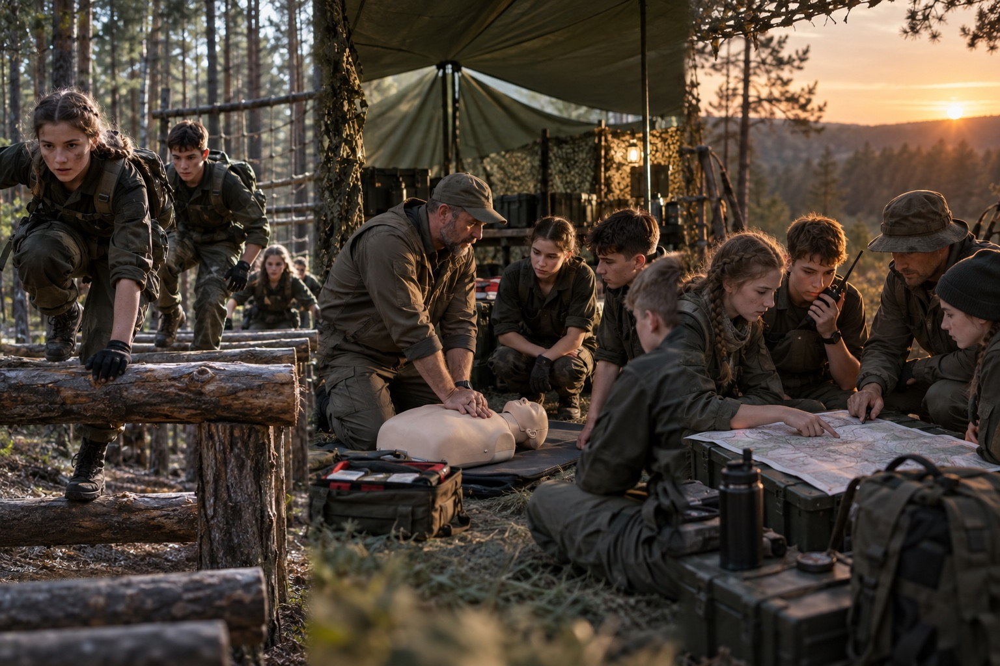

Тактическая подготовка
Командные задачи, безопасное движение на местности и работа в группе.

НВП01 Практика. Дисциплина. Команда.
Проводим образовательные военно-прикладные смены в детских лагерях — безопасно, содержательно и с настоящим командным духом.
Выездная программа для лагерей
Опытный педагогический состав
Собственное оснащение
02 / Опыт, которому доверяют
Встраиваем программу в жизнь лагеря: учитываем возраст участников, расписание, инфраструктуру площадки и задачи конкретной смены.
Каждая точка — новый лагерь, новая команда и программа, настроенная под площадку.
03 / Направления подготовки
Содержание строится вокруг практики, командного взаимодействия и понятных сценариев. Нагрузка адаптируется под возраст участников.
Командные задачи, безопасное движение на местности и работа в группе.
Правила безопасности, устройство учебных макетов и основы меткости.
Алгоритмы первой помощи, эвакуация и практика на тренажёрах.
Дисциплина радиообмена, передача координат и постановка задач.
Карта, компас, построение маршрута и ориентирование на местности.
Основы полевого быта, маскировка и решение прикладных задач.
Устройство, безопасное пилотирование и работа экипажа.
Дисциплина, ответственность, взаимовыручка и слаженность.
04 / Инструкторский состав
Инструктор — не просто специалист по своему направлению. Это педагог, который умеет объяснить сложное, вовлечь группу и удерживать высокий стандарт безопасности.
Передают прикладные навыки через понятную практику и личный пример.
Отрабатывают базовые алгоритмы на тренажёрах и учебных сценариях.
Помогают каждому участнику включиться в процесс и работать в команде.
«Строго к задаче. Бережно к ребёнку. Ответственно к результату.»
05 / Материально-техническое обеспечение
Большой комплект оборудования позволяет развернуть насыщенную программу на площадке лагеря и проводить занятия параллельно для нескольких групп.
06 / Атмосфера смены

Иллюстративные кадры. Фотографии реальных смен можно подключить после открытия доступа к галерее заказчика.
Выездная программа для лагерей
Подготовим содержание под возраст, длительность смены и возможности площадки.
Посмотреть направления